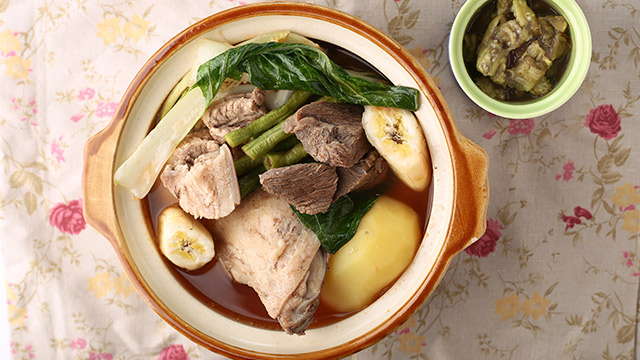
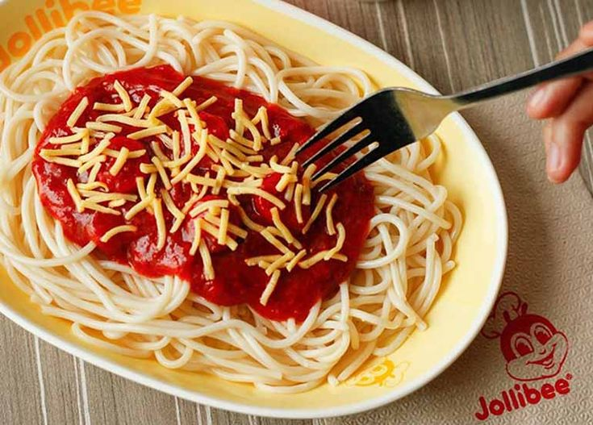
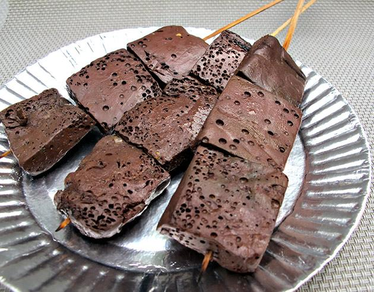
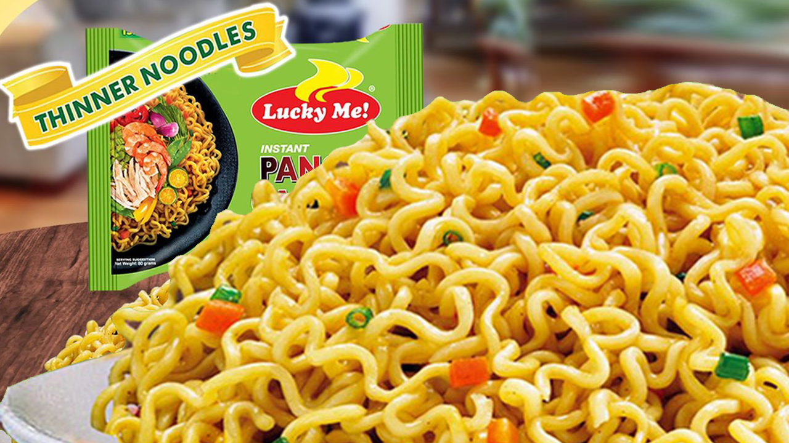
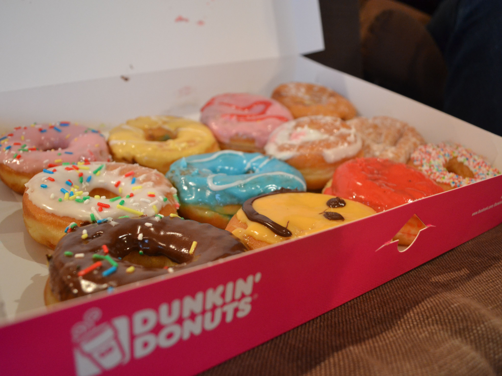
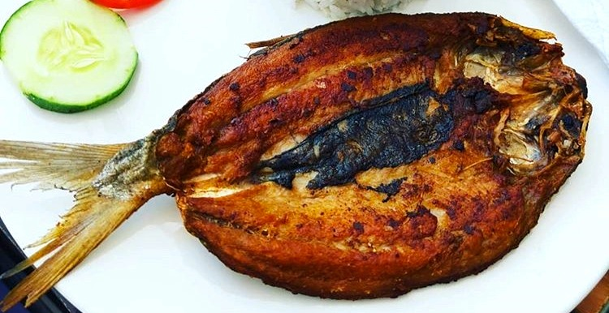
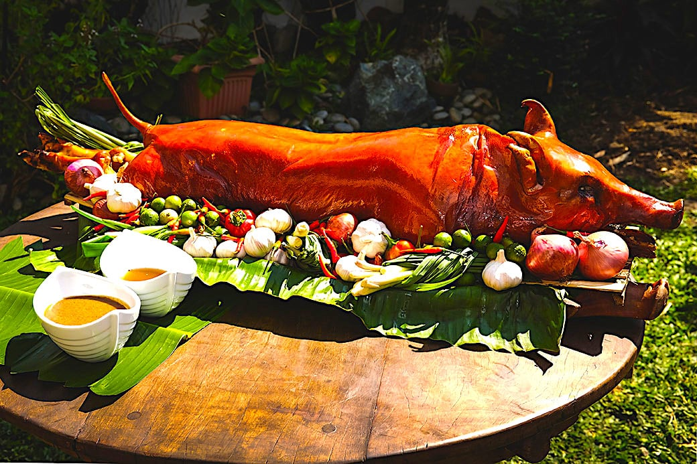

My Top 10 Favorite Foods
Pochero
Pochero is a Spanish stew that is popular in Yucatan, Mexico, Argentina, Paraguay, Uruguay, Per, the Philippines, and Spain, particularly in the autonomous regions of Andalusia and the Canary Islands..
Jollibee Spaghetti
Jollibee's sweet spaghetti sauce is now the tastiest and meatiest Jollibee has ever made! With chunky chunks of flavorful ham and sausages, ground beef, premium grade noodles, and plenty of cheese.
Betamax
Betamax is pig or chicken blood that has been coagulated and formed into squares. The name comes from its resemblance to the Betamax video cassette tape, which comes in a box. Betamax has no unpleasant odor or taste, despite the fact that it is manufactured from blood. In reality, it has a mild to bitter flavor that begs for a side of hot vinegar.
Fried Rice

Fried rice is a meal made using cooked rice that has been stir-fried in a wok or frying pan with other ingredients including eggs, veggies, fish, or meat. It is frequently consumed on its own or as a complement to another meal.
Pancit Canton
Lucky me is a Filipino instant noodle company best known for its quick Pancit Canton noodles. It's also the country's most popular instant noodle brand, and it's become engrained in Filipino society.
Pork Sisig

Sisig is a Filipino dish made from parts of a pig's face and belly, and chicken liver which is usually seasoned with calamansi, onions, and chili peppers. It originates from the Pampanga region in Luzon. Sisig is a staple of Kapampangan cuisine.
Dunkin Donuts
Dunkin' Donuts LLC, often known as Dunkin' and abbreviated as DD, is a coffee and doughnut corporation based in the United States, as well as a quick service restaurant. In 1950, William Rosenberg started it in Quincy, Massachusetts.
Bangus
Bangus, often known as milkfish in English, is the national fish of the Philippines. Because it is an adaptive, strong, and durable fish that can live in limited quarters, it is commonly cultivated on fish farms and is readily accessible across the Philippines.
Halo Halo

Halo halo (Tagalog meaning "mix mix") is a famous frozen dessert in the Philippines prepared with crushed ice, evaporated milk or coconut milk, and a variety of other toppings.
Lechon Baboy
Lechon is a pig dish popular in numerous parts of the world, most notably in Spain and former Spanish colonial territories. Lechon is a Spanish term that refers to a roasted newborn pig that is still nursing and eating its mother's milk.